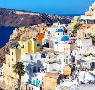
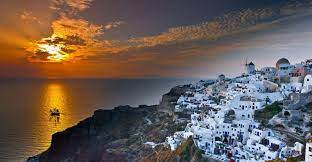
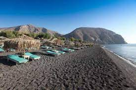

Les célèbres maisons blanches à Oia

Le coucher de soleil spectaculaire sur la caldeira

Les plages de sable noir de Perissa
Explorez Santorini
Santorini, l'une des îles les plus pittoresques de la Grèce, est célèbre pour ses vues incroyables, ses plages et son architecture unique.
Conseils de Voyage
- Admirez le coucher de soleil à Oia, l'un des plus beaux au monde.
- Détendez-vous sur les plages de sable noir de Perissa et Kamari.
- Explorez les ruelles étroites de Fira, la capitale de Santorini.